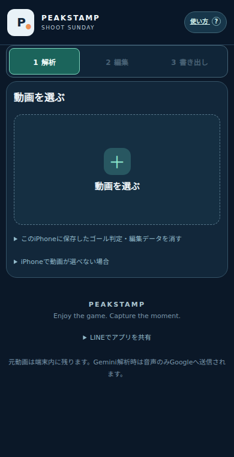
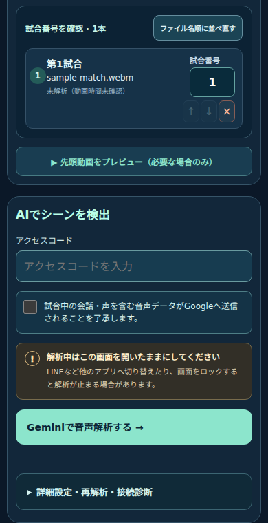
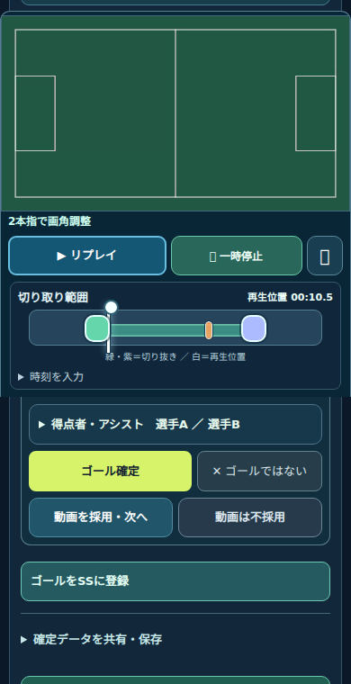
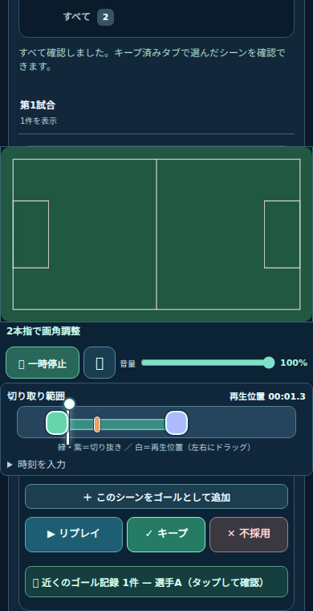
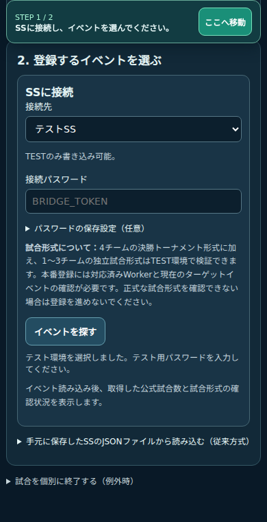
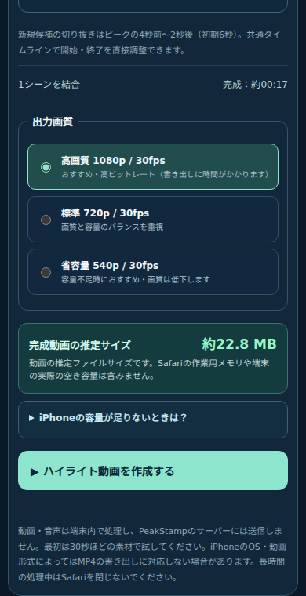

試合のあの瞬間を、
記録に残そう。
動画を選び、AIが見つけた候補を確認。ゴールをSSへ登録したり、好きなシーンをハイライトにまとめたりできます。
スマホ対応2026年11月8日版操作中のアプリから開いた場合は、このタブを閉じると元の画面に戻れます。解析・書き出し中はアプリの画面を開いたままにしてください。
画像はスマホ幅の実画面です。動画・選手名は説明用サンプルで、SSへの送信はしていません。画像を押すと拡大できます。
動画を読み込む

- から試合動画（MOV／MP4など）を選びます。
- 一覧でファイル名と試合番号を確認します。長い動画は1本ずつ追加しても構いません。
- 撮影が途中で途切れた場合は、続きの動画も追加し、を押します。
同じ試合番号にしても、動画ごとの再生時刻は別々に保持されます。
撮影時のひと工夫
冒頭に「第1試合、1番対2番」のように対戦カードを声に出し、ゴール時には得点者・アシスト者をコールすると、確認の手がかりになります。認識結果は必ず見直してください。
AIで解析する

- アクセスコードを入力します。
- 音声がGoogleへ送信されることへの同意を確認します。
- を押します。1本だけ調べる場合は、対象を選んで個別に解析します。
- 解析が終わったら試合ごとの対戦カードを確認します。空欄のチームを入力し、「確定して次へ」を押します。
失敗した動画があれば、その動画の候補は揃っていません。失敗したファイルを確認してから次に進んでください。
解析中はSafariを開いたままにし、画面をロックしたり他のアプリへ移動したりしないでください。
元動画は端末内に残り、Gemini解析では音声がGoogleへ送信されます。API利用料や通信料が発生する場合があります。保存済みの解析結果があれば再利用されます。
ゴール・対戦カードを確認

- で実際の場面を見ます。
- 得点者、アシストの有無・選手名、対戦カード、必要に応じてSS試合番号を修正します。
- 内容を確認して得点情報を確定します。ゴールでなければを選びます。
対戦カードが空欄のとき
実況から認識できた対戦カードは、未確定の空欄に反映されます。すでに確定したゴールにが表示された場合は、内容を確認して押してください。変更後は得点情報をもう一度確認します。
候補がないときは「1 vs 2」のように手入力してください。コールしていても、音量や周囲の声などによって認識できないことがあります。
切り取り範囲を調整してキープ

- 開始・終了位置を動かして、残したいプレーが収まるよう調整します。
- リプレイで切り取り範囲を確認します。最後のゴール動画を判定すると、次のハイライト候補が開きます。ゴール直前のパスや展開も入れると、見返しやすくなります。
- ハイライトで使いたいシーンは。ゴール画面では「動画を採用・次へ」を押します。不要な候補は不採用にします。
ゴール時刻は得点した瞬間。切り取り範囲は動画として残す開始・終了位置です。
もう一度見るときは「キープ済み」、不採用も含めて見るときは「すべて」を選び、最初の場面を再生します。「キープ」「不採用」で次の場面へ進み、最後まで順に見直せます。
SSに試合結果を登録

- SS登録画面へ進み、接続先がか「テストSS」かを確認します。
- 接続パスワードを入力し、イベントを探して、正しい開催日のイベントを読み込みます。
- 公式の対戦カード・試合番号と、登録予定のゴール・選手を確認します。未確定の項目を修正します。
- 本番登録欄で登録内容を確認し、画面の案内に従って登録します。
- 終了後、SSから取得した登録結果と試合の終了状態を確認します。
試合が表示されない場合は、SS側の「スコア入力」から試合作成を行ってください。3位決定戦・決勝は、準決勝の正式結果が確定してから登録します。
通信が切れた場合は、開始ボタンを押し直す前になどの進捗確認操作で、前回の結果を確認してください。
新しい手動ゴール直接登録ボタンは、現時点ではTEST限定です。本番では画面に表示される既存の登録手順を利用してください。
ハイライトを書き出す

SS登録とハイライトの書き出しは別の操作です。動画だけを作ることもできます。
- 「キープ済み」で採用するシーンを見直します。
- から、画面の案内に沿って動画を作成します。
- 「完成した動画を保存・共有」は何度でも押せます。編集を変えたら「変更を反映して再書き出し」を押します。iPhoneでは共有メニューから「ビデオを保存」または「ファイルに保存」を選びます。
Highlight Studio（HS）で編集する場合
で、キープしたシーンの開始・終了時刻などを保存できます。MP4完成後は「HS用データを送る」からLINEを選べます。元動画は別途共有してください。
| 形式 | 含まれるもの |
|---|---|
| MP4 | 再生できる完成動画 |
| HS用JSON | 編集情報。動画ファイルそのものは含まれません |
端末や動画形式によってMP4作成に対応しない場合があります。初めての場合は短いシーンで保存まで試してください。
うまくいかないとき
動画が読み込めない／「The object can not be found here.」
元動画を端末内に保存し、失敗した動画の選び直し操作から同じ元ファイルを選んでください。別の動画や加工し直したファイルでは、保存した編集情報と一致しない場合があります。
解析に失敗した／「Load failed」
まずアクセスコードと通信状態を確認します。「詳細設定・再解析・接続診断」内の接続テストで確認してください。このエラーだけでは原因を特定できません。動画の読み込みエラーも確認し、成功済みの結果を残して失敗分を再試行します。
ハイライトの件数が少ない／合計時間が短い
動画一覧の本数・解析状態と、ハイライトの解析対象・長さの表示を確認してください。読み込んだ本数と解析済みの本数が一致しない場合は、未解析・失敗分が残っています。候補数は全ゴール数を保証しません。波形の時間も、完成するハイライトの長さとは異なります。
ゴール動画が再生されない
読み込みを待ってからリプレイまたは再生をもう一度押してください。元動画自体が利用できない場合は、同じファイルを選び直します。音が出ない場合は端末とプレーヤーの音量も確認してください。
対戦カードが空欄に戻った／認識されない
「実況の対戦カードを反映」が表示されているか確認します。候補がなければ手入力してください。既に入力・確定した情報は、認識候補で勝手に上書きしない仕組みです。
TESTから本番に移ると編集内容が見えない
TESTと本番はURLが異なり、ブラウザの保存領域も別です。解析結果・編集内容は自動で移りません。作業途中のTESTタブは残し、必要な書き出しを済ませてください。HS用JSONは本番アプリの全データ移行用バックアップではありません。
書き出し中に止まる／保存できない
Safariを開いたまま処理し、短いシーン・少ない件数で試してください。完成後に保存できない場合は、画面に表示される「動画を別タブで開く」も利用できます。
すでに編集中の場合は、新しく開き直さず元のアプリのタブへ戻ってください。